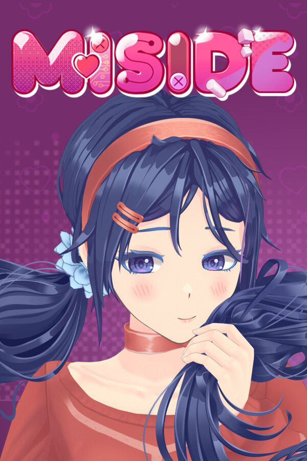
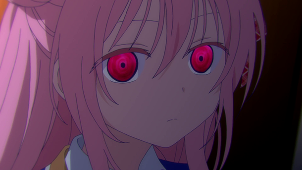

Les jeux que j'aime
Ma sélection de jeux préférés comprend Miside, DDLC, Destiny 2 et Battlefield

Les animés que j'aime
Mes animés favoris incluent Oshi no Ko, Happy Sugar Life et Whisper Me a Love Song. J'apprécie surtout le Yuri, la romance, et les intrigues bien construites

Mes passions
Mes centres d'intérêt incluent l'IA, l'acquisition de nouvelles connaissances, l'expérimentation créative et la découverte de nouvelles perspectives